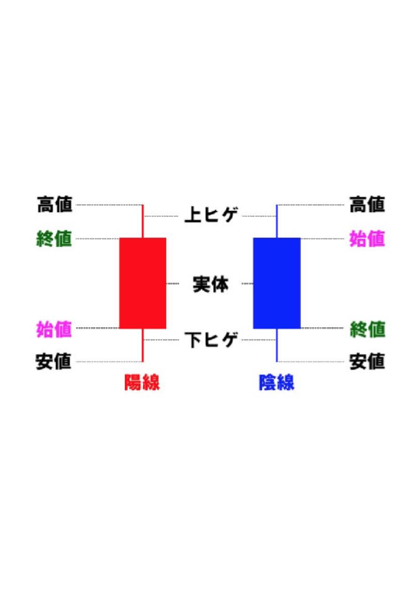
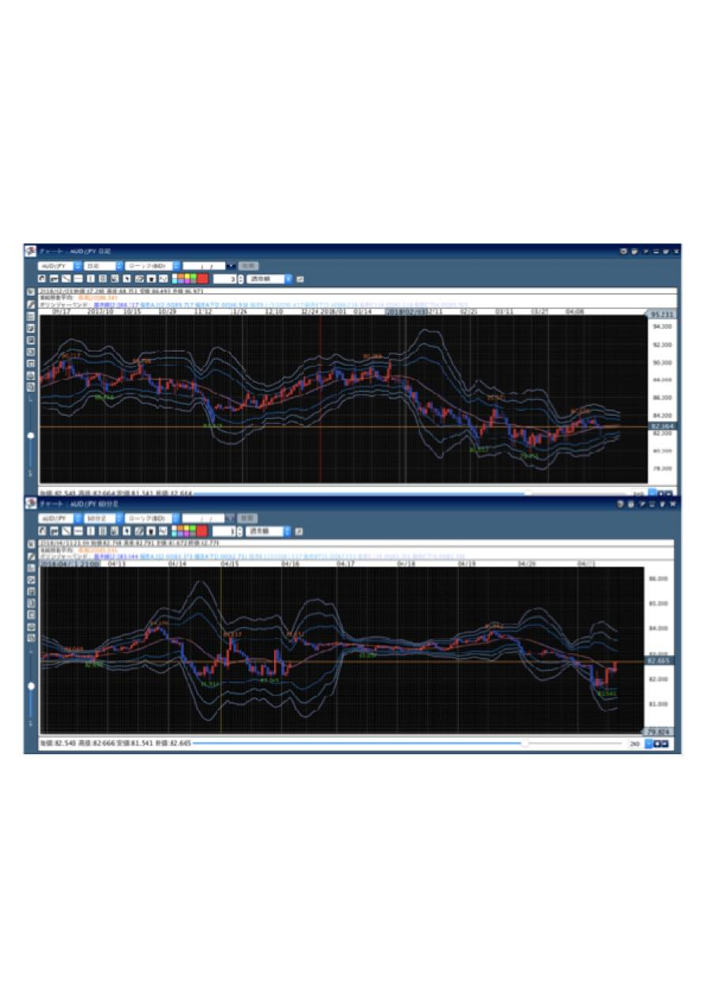
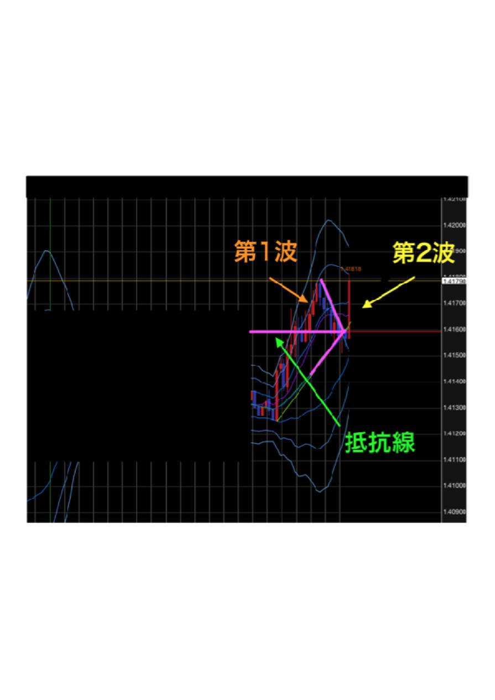
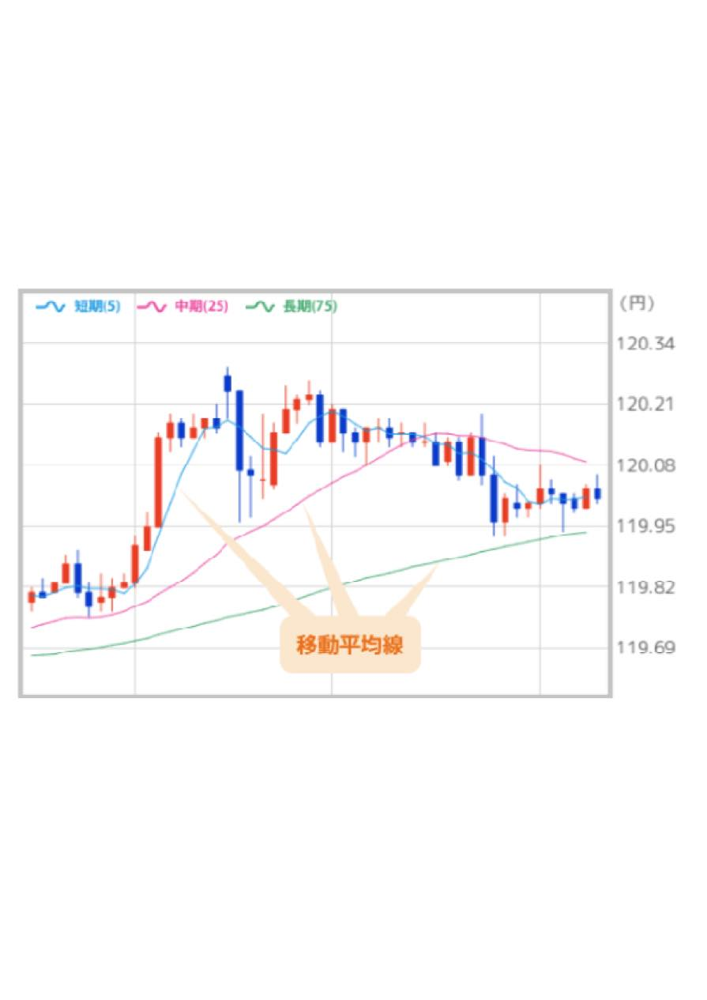

| FXで勝ち続けるための教科書 | |
| 赤池鎮 | |
| kabushikigaisyaessennsu (2019) | |
私は先日、あるＦＸトレーダーの方と対談をしました。
その方は毎月月利２０％
を安定的に出しているトレーダーで、４００万円程度の資金で毎月８０万円を稼ぎ出しているとのこと。独学ではなく、２２年間ＦＸで稼ぎ続けた師匠からノウハウを教わったからこそ、勝てるようになったといいます。
この本では、あまりにも基本的で質問できないようなレベルの知識から、ＦＸの始め方、稼ぎ方を「ＦＸにチャレンジしてみたい」というみなさんにも、分かるようにしっかりお教えいたします。
まずＦＸとは「ｆｏｒｅｉｇｎ Ｅｘｃｈａｎｇｅ」を訳した英語になります。外貨の両替ですね。
海外旅行に行かれた経験のある方は多いと思います。海外旅行に出かける前に、銀行や外貨両替ショップで、旅行先の国の通貨に変換したことを覚えていませんか？
たとえば円をドルに両替したはずです。外国に行くときの両替もまた、ＦＸの一部であると考えてください。
ＦＸは「二国間の通貨の為替レートの差で利益を出す」取引とよく言われています。
二国間というのはたとえば日本とアメリカ、日本とシンガポールでもフランスでもドイツでも構いません。それぞれの国に通貨があります。そこでたとえば日本とアメリカの二国間であれば、ドルと円の通貨の変換になります。
たとえば１ドル１００円のとき、旅行に行くために両替します。
買い物をして、ドルが余ってしまったとしますよね。そうすると日本で円に両替しなければなりません。このとき、旅行から帰ったら日本円が１ドル１２０円になっていたとします。この時に余ったお金を両替すると２０円差が出ます。つまり２０円の利益が出るということです。１ドル当たり２０円儲かりました。
これが二国間の為替レートの差を使ったトレードということです。
ところが、円安になった時に２０円の利益になりますが、逆のパターンもあります。アメリカに行った時に１，０００ドルが１００円だったとして、帰国したら１ドル９０円になっていたとします。この場合は換金すると１０円の損失が出てしまうわけです。
単純にいえば、これがＦＸの概略です。
テレビのニュースで「ドルが１１０円になった」ということを毎日報道しているように、あらゆる通貨の価値は毎日変動しています。したがって、変換する時期によっては儲かることもあれば、損失を出してしまうことがあります。このタイミングをつかむ「ゲームのようなもの」と考えてください。
「なんだ、そんなものか」と少しだけ安心しませんでしたか。
「もっと知りたい！」と感じた方もいらっしゃるかもしれません。
冒頭でお話したＦＸトレーダーの方は２２年間ＦＸで稼いできた師匠で出会い、その師匠に指導いただいたからこそ、現在、毎月８０万円以上の利益を生み出しています。みなさんもそのＦＸトレーダーのように勝てるトレーダーになってほしいと考えています。
そこでＦＸを初めてチャレンジする方でも、成果を出せるＦＸについての講義を始めることにいたしましょう。
ぜひ最後まで読み進めてみてください。
あなたがいま知りたいのは「ＦＸでどうやって稼ぐの？」そして「ほんとうに稼げるワケ？」ということではないでしょうか。そのためにまず知っておくのは、「なぜ通貨の価値は変動するのか？」ということです。
ＦＸでは通貨の変動を「値動き」といいます。
冒頭で海外に行く時に両替をすることをたとえましたが、それでもＦＸは値動きします。
大富豪が１億円の両替をしたら、さらに値動きします。あるいはパン屋さんが小麦粉を海外から輸入や輸出する際にも値動きはします。
一番大きく値動きに反映するのは、企業の投機（当たれば大きい利益を得られる）です。日本の自動車を輸出するとき、海外の人は日本の円で購入します。アメリカ人が１台１００万円の車を購入するとしましょう。そのためには自分の持っている１万ドルを一度１００万円に変えてから日本の車を買っています。
そういう売買が積み重なって値動きが起こり、いわゆる「円安・円高」と言われる状態になります。もちろん一人の投資家が動かすお金によって値動きが起きる割合も多くあります。ひとりひとりの取引が少額であったとしても、集まれば大きな値動きになるのです。
お金以外では、政治や経済も値動きに影響を与えます。トランプ大統領が何か過激な政策を打ち出したとか、あるいはテロが勃発しても値動きします。火山の噴火や地震などの自然災害でも値動きのきっかけとなるのです。
したがって、値動きの要因は特定はできません。個人の取引、企業の取引、国家の経済や政策、そして自然災害など複雑な要因で相場が動き、そこにトレードをする人たちがいて、後で説明しますが値動きを時間ごとにグラフにしたチャートが成り立っているのです。
ちなみに「いまさら恥ずかしくて聞けない」とお考えかもしれませんが、「円高」と「円安」についてもご説明いたしましょう。
１ドル１００円だとしたら、普通であれば円が７０円になることが円安だと考えるのではないでしょうか。残念ながら間違っています。円の値段が１００円から１３０円になること、つまり今よりも価値が上がることを円安といいます。円高は逆に１００円が７０円になることです。
なぜかといえば、価格の問題ではなく価値の話だからです。
つまり７０円で１ドルというときには、１００円のときと比べてドルの価値が高くなっています。たとえばパンが１個１ドルだったとしますよね。日本に来たときにこのパンが７０円で買えるなら、ドルの価値が３０円高くなっているということです。逆が円安です。
円高と円安の話は余談でしたが、ＦＸは極論を言うと「上がるか下がるかの二択のゲーム」です。１ドルが１２０円になって上がるのか、それとも９０円になって下がるのかを当てます。
もう一度「ＦＸで利益を出す仕組み」を整理してみましょう。
ＦＸでは「チャート」というグラフで値動きを一目で分かるようにしています。チャートを見ていただければ一目瞭然ですが、相場は上昇と下降をジグザグに繰り返しています。
たとえば、値動きが上昇にある場合にドルを７２円で買って両替します。しばらくすると、為替が９０円まで上がりました。ここで売るのです。このときの差額の１８円が利益になります。
逆の場合もあります。ＦＸは買うだけでなく、売ることもできます。相場が下落しているときに９０円近くで売って、下がったところで買い戻すのです。上昇しているときと同様に、差益分も利益になります。９３円で売って７３円で買ったら２０円が利益です。
ＦＸは上昇と下落のどちらでも取引を選ぶことができます。上がると予想した時には買って売る、下がると予想した時には売ってから買い戻す。この２種類で利益を得ることになります。
これは小学生にやらせても５０％
の確率です。
しかしＦＸで勝てる人は１割であり、負ける人は９割です。
なぜ勝てるのか、そして負ける人が多いのか？
それを知りたいと思いませんか。
はっきり言ってしまうと、ＦＸは「初心者の方が勝ちやすい」です。
なぜかといえば、基本に忠実に、素直に、言ったことを守ってきちんとトレードするからです。覚えた知識が少ないだけ、余計なことを考えません。自分勝手な応用をしないから、リスクを減らすことができます。「初心者でも大丈夫なの？」という質問は、ＦＸをはじめようとする方から最も多く質問されることですが、大丈夫です。
みなさんは「知識がたくさんなければＦＸはダメなんじゃないか？」と考えているのではないでしょうか。しかし、必要知識があまりないことの方がうまくいきます。
なぜかといえば、他の人はたくさん勉強しますよね。けれども難しい手法をあれこれ混ぜながら使ってしまうのです。だから、自分のやり方を確立していません。いろんな知識や手法を考えすぎて、いつの間にかタイミングを逃してマイナスが出てしまう状態になるのです。
勝っているトレーダーは難しく考えずに、とにかくシンプルにやっています。
そのテクニックのひとつが、チャートをきちんと読むことです。「集団心理」や「群集心理」という言葉を聞いたことがあるかもしれません。
多くの人は、誰かが行動を起こすと同じように反応してしまうことです。勝てるトレーダーは、そんな人間の心理をつかんでいます。
チャートの値動きにはさまざまな要因がありますが、基本的に値を動かしているのは「人」であり、ロボットではありません。
旅行に行くときの両替や、会社の輸出や輸入や、トレードをしている人たちなど人々の、いわば多数決でチャートが動いているわけです。この特性、集団心理を読み解けば、利益を生むトレードができます。
まずは素直に勉強していくことが大切です。
これだけで十分だと思っているのですが、まっさらな状態で勉強すれば、あらゆる知識がプラスになります。むしろ余計な知識には目を向けずに、シンプルに学ぶことが大切です。きちんとしたスキルを獲得すれば初心者でもＦＸで稼げます。
ところで、相場は２４時間常に動いています。
そこで「チャートをいつも見ていなきゃいけないのか？」と考えている人もいるようですが、そんなことはありません。２４時間トレードはできますが、だからといって２４時間チャートに張り付いている必要はないのです。自分の予定に合わせて時間を管理して取引ができます。ライフスタイルに合わせて取引できるところが、ＦＸのいいところです。
株の場合は９時から１５時までと決まっています。
しかしＦＸには東京は９時から１２時、ロンドンは１６時から２２時、ニューヨークは２３時から翌日６時のように世界中どこか市場が開いていて、一日で活発な時間帯があります。だからこそ会社員でも子育てをしている方でもコアな時間にトレードができます。働いている方には夜勤の場合もあれば日勤の場合もあるでしょう。しかし、月曜とか土曜日の朝まで、そして祝日にも空いている時間を使ってトレードができます（正確な為替の休みは、土(朝７時以降)曜日、日曜日と元旦とクリスマスです）。
会社に勤めながら副業としてＦＸをやるなら１時間しか時間がない人もいれば、専業で５～６時間たっぷり取引に時間を使うことができる人もいるでしょう。
「じゃあ時間がないからＦＸできないの？」「時間があるからいっぱい稼げるの？」と、当然そう考えますよね。もちろんＦＸにかける時間によって、トレードで勝てるか勝てないかは関係があります。
取引すべきときにできなかったり、値動きを見逃してタイミングを逃してしまったり、実際にそういうことはあるものです。そこで、自分に合ったトレードのスタイルを確立することがＦＸにおいては重要になります。
しかし、ＦＸはネットがあれはどこでもできます。海外旅行に行きながらでも遊びながらでも移動中でもできます。自由に時間を使うことができます。
「どれぐらいの時間を使えばいいの？」ということに関しては、みなさん会社でも休憩時間や空いた時間があると思います。
このときにスマートフォンを見ている方も多いのではないでしょうか。現在ではスマートフォンでチャートを見ることができるので、自分のペースでトレードができます。夜の時間でも１時間や２時間あれば十分です。パソコンがなければいけないと思っている方もいるかもしれませんが、実際にはそういうことはありません。パソコンがなくてもスマートフォンでもできます。
２４時間トレードできるので、女性でトレードされる方も多いですね。
子育ての間や夫に隠れてなど、お小遣いを稼いでいる人がいます。子どもができたら、家族といる時間を大切にしたいと思いませんか。サラリーマンとして会社に勤めていると、なかなかそういう時間をつくることができません。子供が幼稚園のときはお遊戯会、小学校になったら運動会など、行きたいけれど仕事だから行けないという親が結構多いものです。けれどもＦＸのよいところは、時間に縛られることがないことです。
時間は自由になるといっても、「ＦＸはどれぐらいの資金が必要で、どれぐらい稼げるのか？」という疑問があると思います。
スタートする時の資金は５万円ぐらいからできます。あまり気にしなくて構いません。
どれぐらい稼げるのかといえば、私は３年ほど前から安定して８０万円ぐらい稼いでいます。比率でお伝えすると、月利で２０％
から３０％
、頑張れば６０％
も達成できます。きちんと勉強すれば月利で２０％
ぐらいは安定して稼げるということです。つまり１００万円あれば、毎月に２０～３０万円を生み出せます。
もちろん資金があれば、もっと利益は上がります。１，０００万円あれば毎月２００万~３００万円は稼げますが。極端なことをいえば、１億円あれば３，０００万円も夢ではありません。
とはいえ気になるのは「税金はどうするの？」ということでしょう。
みなさん真面目な方が多いので、この質問は結構聞かれます。
投資の税金は２０％
です。利益の２０％
は税金として支払わなければなりません。確定申告と似ていて、１年間の１月１日から１２月３１日までの利益を翌年の２月から３月の間に支払います。きちんと申告しましょう。
具体的に二国間の通貨でトレードをする場合「おすすめの通貨は？」もよく聞かれることです。
私は７通貨に絞っています。ポンド円（ＧＢＰ／ＪＰＹ)、ユーロ円（ＥＵＲ／ＪＰＹ)、豪ドル円（ＡＵＤ／ＪＰＹ)、ドル円（ＵＳＤ／ＪＰＹ）をメインとして、後はポンドドル（ＧＢＰ／ＵＳＤ)、ユーロドル（ＥＵＲ／ＵＳＤ)、豪ドルドル（ＡＵＤ／ＵＳＤ)です。
この７通貨を選んだ理由は二つあります。一つ目が情報が入ってきやすいこと、一番身近だからということ。そして二つ目が値動きが安定的だからです。
結局ＦＸは両替なので、よく両替される通貨の方が安定して取引できます。実際にこの７つの通貨でＦＸをやっていただければと思います。
トレードのスキルは一生モノの財産です。
知識として蓄積して記憶に残るので、そのスキルを使ってお金を稼ぎ続けることができます。
「会社が倒産して仕事ができなくなった！」ということがありません。
会社にいると、付き合いで同僚と飲みに行って愚痴ばかり聞かされる場合もたくさんあります。ところがＦＸは「ひとりで可能」です。もし他の人と関わりたいと思うのなら、関わりたい人とだけと関わって仕事ができます。
基本的に二国間の両替なので、国がなくならない限りは、ずっと稼ぎ続けることができます。
２５歳で始めたら、それこそ７０歳から８０歳まで稼げるということです。現在、人生を楽しむために投資を始める方が多くなりました。時代に乗り遅れないように一歩ずつコツコツと学んで人生を豊かにしませんか。美味しい食べ物や飲み物がほしい。楽しいことをしたい。長生きしたい。海外旅行に行きたい。家族を守りたいなど、理想の生活という夢のためにＦＸをやったらよいのではないでしょうか。
不安に思っていることが解消できたでしょうか。
では実際には何から始めたらいいのか、と気になりませんか？
そこで次の章からは具体的にＦＸの始め方を解説していきます。
早速、ＦＸを始める準備について解説します。
ＦＸの準備段階には次の３つをするだけです。
（１）証券会社の選定
（２）口座の設立
（３）お金を預ける
まずＦＸを行う業者の選定です。ファンドや通商という名称が付けられている会社が多くあり、銀行でも行うことができます。
次にこれらの業者から、ひとつの業者を選んで口座を開設します。口座の開設は、インターネットでもできます。必要書類を送付します。
口座が開設できたら、口座に５万円、１０万円、１００万円などのようにお金を預け入れます。これでＦＸのトレードができます。準備完了です。そんなに難しく考えないでくださいね。
手続自体は簡単なのですが、みなさんが教えてほしいのは「どの証券口座がおすすめか？」ということではないでしょうか。
ＦＸができる業者には、いろいろな会社があります。たとえば証券会社は、長期トレードが強いといえるでしょう。
しかし、注目したいのは「手数料」です。手数料が高いか安いかを確認してください。
特にＦＸを初めて取り組む方は、勉強のために実際に何度もトレードを体験する必要があります。「塵も積もれば山となる」ではありませんが、手数料がわずかに高いだけでも取引の回数が多ければ費用がかさみます。
手数料の他には、各業者は相場のチャートを工夫していますが、チャートをいじりやすいかどうかも選択のポイントといえます。
総合しておすすめするのは、ヒロセ通商の「ＬＩＯＮＦＸ」です。非常に有名な口座です。
日本人トレーダーのほとんどが利用しているのではないでしょうか。他の証券会社と比較しても使いやすく、短期トレードの手数料が低いことがメリットです。初心者には向いています。
ＬＩＯＮＦＸでトレードするには、必ず「スプレッド」というものがあります。
スプレッドとは証券会社のマージン（利益）のことです。手数料と同じようなものと考えていただいて構いません。たとえば取引の画面では、買いが１２０，１４７円に対して売りが１２０，１４４円と表示されていたとしたら、買うときと売るときで０，３銭の差額があります。それがヒロセ通商の手数料になります。
※補足
買いをする=買った通貨が値上がりすることを予想する
売りをする=売った通貨が値下がりすることを予想する動き
みなさんが取引しているときに、このスプレッドが引かれます。とても少額なので気にすることはありません。ヒロセ通商のよいところはスプレッドが安いことです。そこで何回取引しても気になりません。他の証券会社では高いところもありますが、この場合は取引を繰りすと結果としてかなりの費用になります。
口座の開設の仕方と、証券会社の利益になる「スプレッド」を解説しました。続いてトレードを始めるにあたって知っておきたいのは「ロット」と「ＰＩＰＳ」です。
まず「ロット」とは、あらゆる通貨に対応した単位です。
１ロットは１，０００通貨に対応しています。ドルであってもユーロであっても円であっても、１ロットは１，０００通貨です。
たとえばドルでいえば、１ロットは１０００ドルです。つまり円に直せばおよそ１０万円が必要になります。けれども、１０万円でトレードできる金額は限界が１０万円ということではなく、２５倍の２５０万円を使うことができます。後ほど説明しますが、これが「レバレッジ」です。小さな投資で大きな金額のトレードができます。
次は「ＰＩＰＳ（ピプス）」です。
ＰＩＰＳは、あらゆる通貨の最小単位になります。円であれば「銭」ですね。１００銭で１円になります。ドルの場合はセントです。１００セントは１ドルになります。ポンドにもフランにも最小単位がありますが、このように通貨ごとに名称が違うと混乱するためにＰＩＰＳという単位を使っています。１セントも１銭も１ＰＩＰＳということです。１００ＰＩＰＳで１円になります。
１ロットは１，０００通貨でした。そこで儲けた金額はロットで表現されます。１０ロット（枚）で１００ＰＩＰＳ動いた場合、上昇した場合は１万円の儲け、下降した場合は１万円の損失になります。５０ロット（枚）で１００ＰＩＰＳ動いた場合、５万円の儲けか損失になります。
ロットもＰＩＰＳも難しく考えずに、国籍に関係なくどれだけの通貨を取引に使ったかということがロットであり、その通貨の最小単位がＰＩＰＳであると考えるとよいでしょう。
専門用語が増えてきましたが、大丈夫でしょうか？
まずはすぐに理解しようとせずに、何度も読み直して確認するようにしましょう。
次も専門用語で説明しますが、時間によってＦＸの取引の手法には３種類あります。時間の短い方から「スキャルピング」「デイトレード」「スイング」の３つです。
「スキャルピング」は短期トレードです。
だいたい取引の時間は５分～１５分がメインで、１分もあります。どんなに長くても１時間以内には取引が完了します。時間がない人にスキャルピングは向いていますが、取引の回数を多くこなさなければ儲けを出すことができません。いわば薄利多売のトレードというイメージでしょうか。
回数をこなすことによって少額の利益を積み重ねます。「今日は１万円でいい」という方であれば、１時間でトレードして終わらせられることができます。ただデメリットとしては、勝率は下がります。勝率が下がる一方で負けが少ないため、ローリスク・ローリターンのトレードです。
「デイトレ」は中期トレードです。
ＦＸのトレーダーでは、一般的にこのタイプの方が多く、１日で取引を終わらせてしまうスタイルです。トレードに必要な時間は１～３時間といったところでしょうか。トレードをしている間に、ずっとチャートを見ている必要はありません。デイトレは短期トレードのスキャルピングよりも獲得できる利益額は大きく、勝率も上がります。
デイトレのデメリットは、チャートを見る回数とトレードのタイミングが少ないことです。けれども利益の額はスッキャルピングと同じなので、スキャルピングでコツコツやっているよりデイトレでゆっくり時間をかけた方が利益を出せます。
初心者の方で練習したいのであれば、最初は取引時間にも余裕があるデイトレをやっていくのが良いです。しかし回数が少ないので、デモ口座などの練習ではスキャルピングで練習するのがおすすめですね。
次に、スイングは長期トレードです。
ＦＸでは時間の値動きを「足」といいますが、４時間足以降のトレードのことです。日足や１週間で期限を区切ったり、年で値動きを持っていたりする人もいるぐらいです。
スイングの考え方としては、日本がこれから経済成長すると予測して投資するような、経済や政治の状況などを吟味して投機のように行います。利益を得られるタイミングは、スキャルピングやデイトレよりも少なくなります。しかし、回数は少なくなりますが、利益につながる機会をみつけたときはとてもおいしいトレードです。
とはいえ、利益と勝率は高くてもトレードの回数が少ないため、初心者は練習できないことが大きなデメリットになります。初心者の方はとにかく場数を踏んで、ＦＸとはどういうものかを体験することが重要です。長期トレードでは取引のノウハウを学ぶことが困難なので、初心者の方にスイングはあまりおすすめしません。
３つのトレードを全部できればよいのですが、なかなかそういう余裕もないはずです。そこでスキャルピングかデイトレから始めるとよいでしょう。
初心者は勝ちや負けなど回数をこなさないと、勉強したことについて「ああ、そういうことか」と体験から理解できないものです。そこで短期トレードもしくは中期トレードで練習することをおすすめします。実際に私もデイトレードスキャルピングをやっています。機会があれば長期トレードというスタイルです。
勝率の高さでいえば、スイング、デイトレ、スキャルピングの順になります。
時間のない人がトレードをやってくのであれば短期トレードで、１時間程度を集中してやるとよいでしょう。お金がない人は、時間とは関係なしに賭け額を下げる方法があります。
いずれにしても、やはり資金がないとトレードはできません。そこで少額の投資から始めることです。勝率はパーセンテージなので、お金がない人が短期トレードで一発当てようとするとルール無視で取引をするので、一発で負けてしまいます。短期トレードでたくさん失敗もすれば、失敗からうまくいく方法を学ぶことができます。
トレードの手法については解説しました。では、どういう基本スタイルもしくは「考え方」でＦＸをやるべきでしょうか。
覚えていただきたいことは「損小利大（そんしょうりだい）」です。
どういうことかといえば、文字通り「損は小さく、利益は大きくすること」です。これがとても難しいのです。だから、みなさんＦＸで勝つことができません。９０％
を超えるトレーダーは「損大利小」のようになっています。
それでは、損小利大にするにはどうしたらいいと思いますか？
それはルールさえ決めてしまえば簡単なのです。
ざっくり言うと、勝つときには平均３万円、負けるときは平均１万円と決めます。
利益のことを「リワード」といいますが、リワードとリスクの比率は３：１以上がベストです。リスクよりもリワードの方が３倍以上あればいいわけです。この比率を守るだけで小学生がトレードしても勝てます。利益は３，０００円でも３００円でもいいのです。３００円勝った時には負けを１００円以下に抑えます。３，０００円の時には１０００円以下になります。その割合を保つことができれば問題ありません。
もう少し具体的に解説しましょう。
１日のトレードが、勝ち＋３、負けー１、勝ち＋３、負けー１、負けー１だったとします。勝率は４０％
です。しかし計算すると+３の利益になります。勝率が低かったとしても、結果として勝っているのです。
勝てないトレーダーは、利益とリスクを３：１に守ることができていません。
さらに問題なことは、その比率を守ることができていない事実を気づいていない、知らない場合があることです。たくさん知識があったとしても、基本ルールを知らないから負けるのです。さらりと解説しましたが、かなり有益なノウハウです。
トレードしたタイミングでリワードが３、リスクが１のように、きちんと利確（利益確定）と損切りのラインをしておけば、システムが自動でやってくれます。
利益とリスク３：１を守る「損小利大」というノウハウをお教えしました。
次にＦＸの手法について解説します。手法というよりも「何をもとに取引の分析をするか」ということから、２つの分析手法があります。その２つの分析方法とは、テクニカル分析とファンダメンタル分析です。
テクニカル分析は、チャートに示された過去の値動きから未来の変動を予測することです。
チャートの形を見て値動きを予想するので、簡単に始めることができます。本書では矢印を見つける「ＴＨＥＡＲＲＯＰＷＦＸ手法」を使います。チャートに矢印を描くだけでトレードに勝てるテクニカル分析です。これから投資を始める初心者の方、利益が出ていない方におすすめします。
ファンダメンタル分析は、世界各国の政治経済の状況から２国間の力関係を予測します。
経済状況や株価、トランプ大統領の発言など「さまざまな情報」をもとにトレードすることです。情報をたくさん蓄え、自分で調べたりニュースをチェックしたり、最新情報を仕入れなければなりません。とても難しいので、初心者には向いていないです。
テクニカル分析はチャートを見てトレードするので、チャートを見ることは必須です。
実際にチャートを見ていだければ分かりますが、チャートには「ローソク足」というものが並んでいます。赤や青などの四角形に上下の線が引かれて、一本一本が特定の時間における値動きを示しているものです。
こうしたチャートを見てトレードをすることがテクニカル分析で、難しそうに見えますが、きちんと勉強すれば理解できます。ローソク足を見た段階で、ＦＸを毛嫌いしてしまう方が多いので、まずローソク足を解説していきましょう。

ローソク足は、赤や青の四角形の上下に細い線があり、ちくわに棒が刺さっている印象です。
ちくわ足でも構わないと思うのですが、江戸時代にローソクに似ていることからローソク足と名付けられました。
赤い四角形は「陽線」です。前回のローソク足よりも値動きが高くなった場合は赤い色の陽線になります。例えば前日に１１０円で取引が終わって、次の日に１１１円だったときには赤色の線になります。青い四角形はその逆に「陰線」といいます。陰線は前回より安くなったということです。簡単にまとめると陽線は赤で前回よりも高かった場合、陰線は青で陰線が出るときは前回よりも安かったということです。
このちくわの棒、というよりローソクの陽線と陰線の四角形は何かと言うと、陽線で言うとスタートした値が下で「始値」といい、終了した時点の四角形の上が「終値」になります。陰線の場合は逆です。
上下の棒は「ヒゲ」と呼ばれます。期間内の値動きで最も下がったときが棒の下側の安値、上昇して、てっぺんになったところが高値です。一時的には下降して低い値になったのですが、最終的には戻ったことを示します。高値も一時的に高くなって戻った値です。
四角い部分は本体、ヒゲの部分は履歴という風に覚えてもらうと良いでしょう。実際には四角い部分の本体を上がったり下がったり値動きしたということです。陰線の場合も同じです。いずれにしても最高と最低の値の振り幅が上ヒゲと下ヒゲになります。
次にチャートには「足」の種類というものがあります。

足というのは時間軸のことです。５分足、１５分足、４時間足、日足とあります。５分足の場合は５分でローソクが１本立ちます。１５分足は１５分で１本立ちます。
したがって、同じ通貨であっても足によってチャートは全然違うものになります。テクニカル分析では、このローソク足を見てトレードしていきます。
テクニカル分析をやる上でこのローソク足の理解は基本です。テクニカルをこれからやる方は覚えてくださいね。
ここから実践的な手法の解説に入ります。
本書では、斬新な「ＴＨＥＡＲＲＯＰＷＦＸ手法」を解説します。
なんとなくワクワクしませんか？
実践の解説に入る前に基本を復習しておきましょう。
ＦＸとは結局「両替」でした。為替のレートの差益で利益を獲得することです。そして、相場はローソク足などによるチャートで表示され、初心者はチャートを見て取引するテクニカル分析が適しているということを解説しました。ＰＩＰＳやロット、レバレッジの話もありましたね。
それらを理解して月に安定して８０万円の利益を出している話を聞くと「すごいスキルがあるんじゃないか？」と思うかもしれませんが、驚くほど簡単です。テクニカル分析を中心としたトレードですがＴＨＥＡＲＲＯＷと呼ばれている通りチャートに矢印を書いてトレードをします。
チャートに矢印を書きさえすればトレードしていける勝率の高いトレード手法です。矢印を発見して、利益とリスクは１:３というルールを守るだけで勝てます。
「ＴＨＥＡＲＲＯＷＦＸ」は「第２波を取る手法」ともいいますが、第２波についてもすぐに理解できるはずです。
全部で６つの流れに分けて解説していきましょう。
（１）局面を判断
ＦＸのチャートから局面を読み取ります。
局面は３種類しかありません。１つは下げの曲面、２つ目はもみ合い（横ばい）の曲面、３つ目は上げ。チャートはランダムに動いているような印象がありますが、実際はこの３つの局面に分けられます。
仮に下げ局面をＡ、もみ合い（横ばい）の局面をＢ、上げ局面をＣとしましょう。実際には、Ｃの後にはまたＢの状態に戻ったり、Ｃが続いたり反転したりどこまでも相場は続きます。このチャートから局面を判断します。
どのように判断するかというと、まず「抵抗線」を引きます。抵抗線とは、もみ合いの状態つまりＢを発見するためのものです。
（２）抵抗線を引く
なぜ抵抗線を引くかといえば「もみ合いのＢの状態では取引をしない」ためです。
とても重要なことなので覚えてください。値動きが横ばい状態で止まっているＢの局面では取引すべきではありません。なぜかといえば、どこに値動きするか予想がつかないからです。
上昇のＣが続くような局面では、流れができているので流れに乗ることが簡単です。下落のＡの局面でも同じです。しかし、わずかに上がったり下がったりが繰り返して、値動きが停滞しているもみ合いの状態でトレードをすると勝率が下がります。
したがって、特定の幅で上下している局面を発見し、「トレードしない」ために抵抗線を引くことが大切になります。
（３）ブレイクポイントを探す
次に「ブレイクポイント」を探します。ブレイクポイントはもみ合い状態のＢから上昇のＣに入ったり、下落のＡに入ったりすることです。このターニングポイントを言います。
ブレイクポイントは変化の流れが出始める時です。抵抗線を引くことによって、この時期がわかりやすくなります。ローソク足が抵抗線の壁を突き抜けることがあると、流れが出始めています。このポイントを探すことによって、次の局面が予測できます。たとえば下の抵抗線を抜けた場合には、Ｃの下落の局面に入ることが分かります。
この最初に突き抜けたブレイクポイントが「第１波」です。
ここから先は、値動きが上昇した場合を想定して矢印の書き方を解説します。
（４）矢印をみつける
ここが「ＴＨＥＡＲＲＯＷＦＸ」の核となる部分なので、注目してくださいね。
抵抗線を突き抜けたブレイクポイントが第１波ですが、たとえば一度上昇して上に行ったとしても、そのままずっと上昇するわけではありません。下降して戻ってきます。しかし、下降した後で上昇し、下降した後で、抵抗線で反発(戻る)場合があります。これが第２波です。
第２波が来たことによって「ブレイクしてトレンドに乗った、確実に取れた」と判断できます。この第２波の部分を取っていくので「第２波を取る手法」といいます。

ここでまず抵抗線を確認してください。

続いて移動平均線を見ます。移動平均線とは、上下しているチャートの値動きの平均を取った線のことです。移動平均線は値動きの平均が下降傾向にあれば下がり、上昇傾向にあれば上がり、Ｂのもみ合いの時には水平になります。
ここでは上昇している場合を想定しているので、第２波が上がった場合、移動水平線が右肩上がりになります。
この右肩上がりになっている移動平均線に斜め右上向きの線を引きます。
続いて、第一波の戻りに右斜め下向きの線を引きます。
どうですか？
移動平均線を矢印の軸として、右上向きの移動平均線、右下向きの第１波の戻りの線の３つの線によって矢印「→」ができているでしょう。
このタイミングが、トレードするタイミングであるということです。
（５）タイミングを測ってトレード
抵抗線が軸にあって、その上には第１波の下がる線があり下には右上がりの移動平均線があり、矢印ができています。このタイミングが勝てる時期なのです。この矢印を発見することによって、私が教わっていた方は２２年間、ＦＸで利益を出しています。
（６）利確と損切りの設定
勝負するポイントは分かりましたが、次に利確と損切りはどうやるかということです。
思い出していただきたいのは「利大損小」という鉄則であり、勝ちと負けが３：１ということ。これがとても大事なルールです。
矢印の形でトレードした場合に、既に６割から７割、あるいは８割ほどの勝率があります。
通常は５０％
を当てるゲームと解説しましたが、「ＴＨＥＡＲＲＯＰＷＦＸ」の手法確実に守ってトレードした場合は、勝率は既に６割超えています。
初心者の方の場合は、どこまで取れるか判断ができないでしょう。もちろん第２波から下がってしまうこともあり、１００％
勝てる確実性はありません。
けれども矢印を発見できたときに６０％
以上に勝率は上がっています。その時に３：１の割合でトレードをします。確実に損を切り、価値を獲得するようにします。この手法を確実に守らないと負けます。
判断するためには他のいろいろな情報をみる必要がありますが、基本的には矢印の上の部分が３で下の部分が１となっていることが大切です。
この部分が１：１の場合はトレードしません。勝率５０％
でもやりません。第２波による利益が３の場合、損は１でなければ取引しません。損切りする場所は決めておく必要があり、抵抗線を基準に考えてください。３：１のルールを守れば、矢印の少し下が損切りのポイントで、第１波の山のところまでは利益が出せます。
しかしながら、３：１確実に守るといっても、人間なので感情的になったり判断が鈍ったりしますよね。そこで自分で判断しない方がよいのです。ではどうするかというと、システムに任せてしまいます。証券会社のシステムで設定できるので、機械にやらせてしまうのです。
取引を始めた入口のタイミングは自分でやったとしても、出口は機械に任せた方がよいのです。むしろ見ない方がいいでしょう。チャートを見て不安になる時間がもったいないからです。
たとえば１回あたりの価値が１，０００円で負けが３００円という感じで取引を設定します。それをコツコツ積み上げて勝率６０％
や７０％
でやっていくというのが矢印のＦＸということです。
大事なことは負けないことです。
矢印を探すだけで誰にでもできる方法で、単純に言えば平均線きちんと引いて矢印を作ることができれば初心者にもできます。上級者でもずっと使っているぐらいの手法ですから。
難しく考えがちですが、分かりやすいトレード手法だと思いませんか？
「レバレッジ」という言葉があります。
トレードでは「レバレッジがある」などのように必ず耳にする言葉です。
このレバレッジというのは簡単に言えば「てこ」です。
大きな石を持ち上げるのに、木の板をシーソーのように使ってちいさな力で大きな意思を持ち上げる「てこの原理」をご存知ですよね。投資で、てこが使えます。
たとえば１０万円資金がある場合、レバレッジによって２５倍の２５０万円運用ができるのです。少ない資金で大きなお金を動かして、差益を得ることができます。だから低資金の人でも稼ぐことができます。
株式投資の信用取引の場合は３，３倍までしか扱えません。しかし、ＦＸには２５倍のレバレッジがあります。つまり少ない資金ででかい運用ができるということです。
最初スタートするには１０万円、なくても５万円あればスタートできます。そして徐々に増やしていくことが可能です。株の信用取引の３，３倍と比べると、１０万円の資金でも２５０万円のお金を動かすことができるのでかなり大きな金額を動かせるということです。
「レバレッジは怖くありませんか？」とよく聞かれます。
「２５倍のお金を動かして、マイナス２５万円になってしまったらどうするの？」「１０万円以上取られてしまうのではないか」など不安を感じることがあるのでしょう。
しかし、ＦＸのリスク管理は自分で決めることができます。「損切り」というように、これ以上マイナスが出ないように自分で負けを決められるのです。
１０万円を資金として、取引可能額が２５０万円の投資を始めるとします。このときに自動で「強制ロスカット」といって、例えば特定の金額から損をする場合は自動で止めることができます。ＦＸのリスク管理は自動的に設定できるので、初心者でも自分が決めきれない場合には、自動でリスク管理をやってもらえます。利益や損失を固定することも可能です。だから一夜で３００万失ったとか、資金が全部なくなってしまうようなことはありません。
ついでに説明を加えると、強制ロスカットは簡単に言うと証券会社が、これ以上マイナスになったら赤字になりますよと判断して、勝手に決済をして負けを作ってしまうことです。これ以上負けたら大変だから、お客様に代わって決済しておくことです。これがあればマイナスになることは、ほぼありません。
実際、私もなったことがあります。それでも利益は残っています。投資では、トレーダーの生活費などを許容することはできません。したがって強制ロスカットを避けるために、無理な投資入金はやめてくださいねということです。そのために、きちんと損を出さないようなトレードの方法を学ばなければならないのです。
ところで、勝てるトレーダーになれるための勉強方法をひとつお教えしましょう。「トレード日記」をつけることです。利益を出すために大事なことです。
トレード日記というのは何かといえば、パソコンによる取引になりますが、その日のトレードのスクリーンショットを撮るとともに、ノートに次のような３つのことを記載します。日記といっても箇条書きで構いません。
（１）なぜこの局面でトレードしたのか。トレードした理由。
（２）どういうルールや手法でトレードしたのか。
（３）実際にどれくらいのＰＩＰＳ数が取れたのか。
トレード日記を書けば、自分の間違いをしっかり知ることができます。勝率アップにつながります。失敗の原因はもちろん勝った原因も知ることができます。だからこそ日記に記録することが重要になのです。絶対にやった方がいいでしょう。
スクリーンショットを撮ると、まったく同じ形のチャートはありませんが、似たような形のチャートが出てきます。そして「ここで騙されたな」と記憶します。
このような記憶が蓄積されることによって、瞬時にポイントを判断できる直感力が養われます。反復練習は大事です。
トレード日記をつけたら、さらにやって欲しいことがあります。それは自分の師匠に提出して見てもらうことです。そうすると自分で気づけなかった負けた理由や、トレードの癖を師匠から指摘してもらえます。的確なアドバイスをもらえるので勝っているときだけでなく、特に負けている時には提出してください。
師匠に提出することで自分では気づかない癖やトレードがうまくいかない原因がわかると、上達が速くなります。負けている人は、ほぼトレード日記をつけていません。トレード日記をコツコツと続けて書いていくことが、トレーダーとして勝つ秘訣です。
勝ち続けているトレーダーは、勝ち続けるための努力をしています。トレード日記を書くことも、その努力の一部です。日記を１００回書き続けた人と、１回だけメモした人を比べたなら、経験値の定着度がまったく違います。私の師匠も２２年ほどトレードをして暮らしていますが、やはりトレード日記をつけています。
これからトレードを始まる人や、現在ＦＸをやっているけれどもなぜか利益が出てないような人は、ぜひトレード日記をしっかり書くようにしてください。
これまで、ＦＸの始め方や基礎知識を説明してきました。最終章では、勝てるＦＸトレーダーになるための心構えや考え方をお教えします。なぜ勝てないのか、失敗するトレーダーを例に挙げて考えていきましょう。失敗から勝てる方法を学べるはずです。
まず失敗するひとは「リスク（損失）とリワード（利益）をしっかり決めてない人」です。
簡単に言ってしまえばリスクは負け、リワードは勝ちです。ＦＸのトレードにも当然ですが失敗のリスクがあります。しかし、負けたとしても結果としても勝ちが多ければいいと考えることが大切です。どうしても「負けたくないと思っている人」は逆にうまくいきませんね。
うまくいっている人は損失と利益の比率を設定しているということを解説しました。復習すると損失と利益が１:３でした。この勝ち負けの比率を決めてトレードしたら、もうチャートは見ないこと。手動ではなく自動で行うことです。
初心者の方で多いパターンは、トレードの出口を自分でやったり、損が出ているにも関わらず「あとからまた上がってくるかもしれない」と考えて決済できなかったりする人です。
いつか上がってくるだろうと考えてしまう気持ちは分かります。
確かにいつかは上がってくるのです。しかし、それが１年後か２年後か誰にもわかりません。いつ利益が得られるかどうか分からないものに賭けるのは、ギャンブルです。勝っている時も同じです。もっと上にいくだろうと考えていたら、いつのまにか下に下がっていたというように、タイミングを逃すことが初心者の方には多くあります。損切りを自動で決めてしまえば精神的にも楽です。
次に失敗するトレーダーのタイプは「応用するひと」です。
初心者の方には、ある程度本で知識をつけると「自分はできるだろう」と思い込んで、勝手に自己流でやり始める人がたくさんいます。ひとつのことさえきちんとできないのに、たくさんのやり方を詰め込んでやろうとしても失敗するのは当たり前だと思いませんか？
取引がごちゃごちゃになって、なぜこんなところでトレードしたのか、まったく意味が分からない取引をやり始めます。せっかく教えていただいた手法を実行しなかったり、その手法に雑誌で読んだ手法を組み合わせたり、意味不明なことをやり始めると必ず失敗します。
勝ち続けているトレーダーは、ひとつのことを極めている人です。
要するにルールをきちんと守るということですね。
応用するより、ひとつのことだけを淡々とこなすトレーダーが成功します。チャートにはさまざまな波がありますが、全部の波で勝ちに行くのではなく、自分の得意な波だけを選んで勝てるときに勝負をかけるのがプロのトレーダーです。
「独学でトレードしない」ことも大切なので、気をつけてください。
本やＷｅｂサイト、ブログを見ただけで実際にトレードができると思っている人は失敗します。 自分で調べて独学でやることはよくありません。逆にうまくいく方法は、実際にＦＸで稼いでいる人に教えてもらうことです。
ちゃんと成功したいなら、ブログやサイトなど読んで独学で行うのではなく、確実に勝っている人に教えてもらってください。ビジネスも似ているかもしれません。自分なりの方法でうまくできることは、なかなかありません。いきなり結果を出そうとしても無理です。
まずは、成果を出している人から成功体験、失敗体験を聞いたり、真似をしてみたりすることから始めることがコツです。勝っている人に教えてもらうことが、成功する一番の近道です。
そもそも自分の何が間違っているのかさえ、気づいていない場合もあります。
間違っていることを知らずにＦＸを続ければ、ずっとマイナスです。マイナスを減らそうとして大きなお金を運用し始めたりしたら、怖いことになります。
そこで既に解説しましたが「トレード日記」は必ずつけるようにしてください。なぜ勝ったのか負けたのか、データを残してください。それがないと改善ができません。トレード日記をつけたら師匠に見せて、しっかりアドバイスをもらってください。負けを隠さないでください。
実は私は負けたときの日記を隠していた経験がありました。
２か月～３ヶ月の間に負け続けていたときがあり、もう限界で耐えられなくなって師匠に相談したところ、一発で解決しました。負けも勝ちも隠さずに、しっかりトレード日記を見てもらえば改善して上手くなれます。素直にこういうことができれば、最初のスタートは同じだとしても他のトレーダーとぐんぐん差をつけられます。
最後に「ＦＸのトレードで成功する人の３箇条」を挙げておきましょう。
私たちの師匠は、ＦＸで２２年間勝ち続けています。他にもたくさんの成功者がいます。その成功者には次の３つの共通点があります。
（１）先入観で物事を判断しない
（２）チャンスを逃さない
（３）素直に、とにかくすばやく行動する
ＦＸ＝難しそうと感じることで、本当に自分ができるか自信がないという先入観が生まれます。けれども、実際にやってみることが大切です。先入観だけで物事を判断することはやめましょう。
本当はうまくいくにもかかわらず、チャンスを逃してしまう人がいます。
けれども成功しているトレーダーは、とにかく行動が早い人たちです。この話を聞いて面白かったから、今日から始めよう。そんなノリで始める勢いを大切にしてください。自分も師匠から教わったときには、そんな感じですぐに行動を起こしましたよ。
あなたはどうですか？
ＦＸに興味を抱いたきっかけは、みなさんそれぞれ違っているはずです。
もしかするとＦＸではなく起業や別の投資を考えている人もいるかもしれません。
「副業で稼げるかもしれない。」「儲かりそうだ。」そんな期待を抱きながら実際に家族や知人に相談すると「なんだか怪しそう」などと眉をひそめられたり、リスクを指摘されたりして、尻込みしている方も多いのではないでしょうか。
また、あまりにも基本的な知識については誰かに聞くことが恥ずかしかったり、どんな本を読んだらいいのか分からなかったり、これまで行動を起こせなかったかもしれません。
私はＦＸを始めるみなさんに、失敗だけはしてほしくないと考えています。失敗もいくつか紹介しましたが、それと同じことをやらないようにしてくださいね。
何度も繰り返しになりますが、
「ＦＸではノウハウやルールをしっかり守ること」
これだけは絶対に守ってください。守らないとどうなるかと言うと、簡単にいえば負けます。私たちは相当研究して、いろいろな失敗体験を積み重ねてルールを確立しているので、お教えしたルールを破ることは独学でやるのと一緒なのです。
投資では勝つルールは自分で探さずに、実際に勝っている人に教えてもらうのがベストです。
本やブログやサイトで学んではいけない、独学ではダメということを書きましたが、もしＦＸを真剣に始めたい、現在は利益をだせていないけれど利益を出せるようになりたいとお考えでしたら、私達のＬＩＮＥ＠
にご連絡ください。ここには書ききれなかったノウハウ、体験、実際の情報などをご提供しています。
あなたがＦＸで新たなライフスタイルを創造できますように！
タイトル：ＦＸで勝ち続けるための教科書
著者：赤池 鎮
©2018 Osamu Akaike All Rights Reserved.
本書は縦書きでレイアウトしています。ご覧になる機種により表示差が生じることがあります。
本書のコピー、スキャン、デジタル化の無断複製は、著作権法上での例外である私的利用を除き禁じられています。本書を代行業者等の第三者に依頼してコピー、スキャンやデジタル化することは、たとえ個人や家庭内での利用であっても一切認められていません。